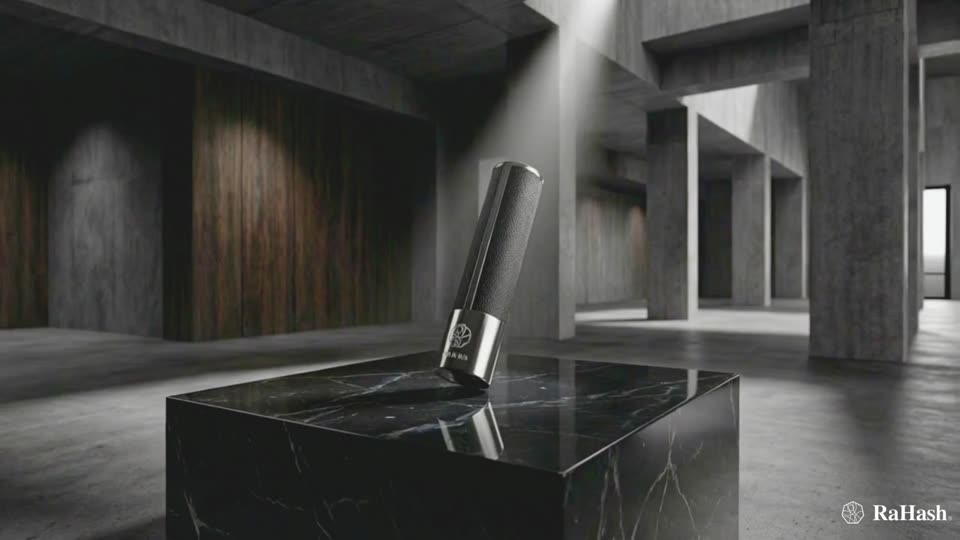
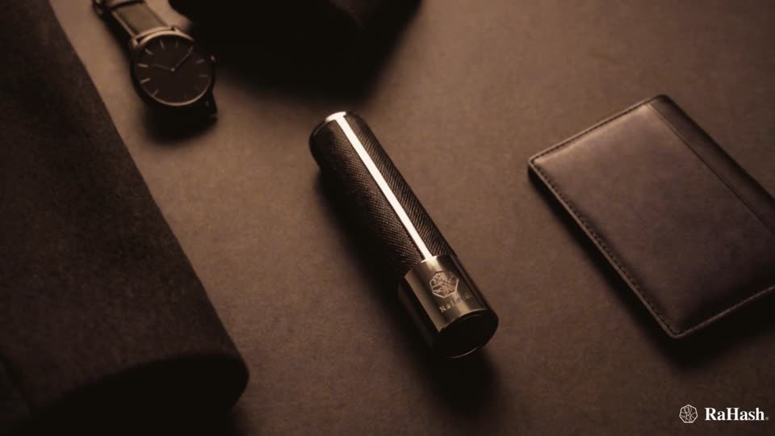
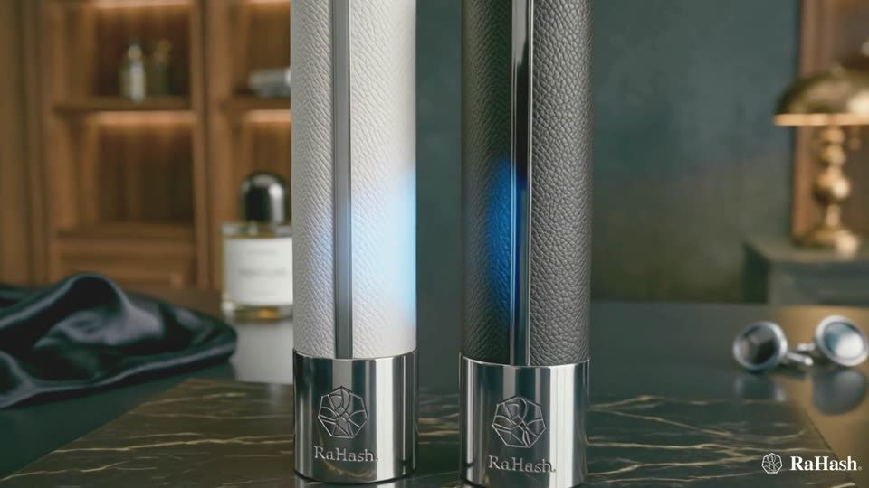
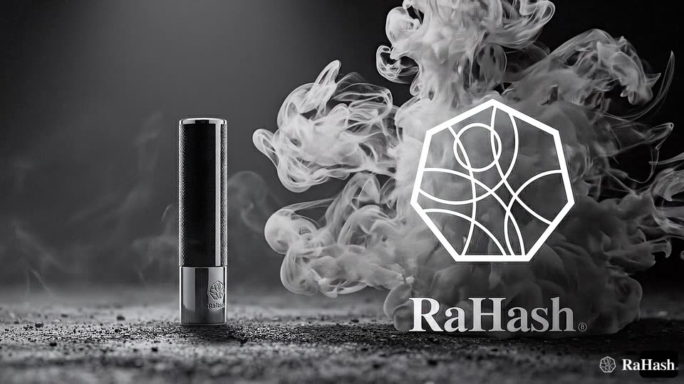

映像の制作
取引先のアクセサリーブランドの、持ち歩き用の香水容器（アトマイザー）の商品PVです。Amazonの商品ページに掲載されている40秒の映像です。
実物：Amazonの商品ページで使われている映像です商品ページを開いた人に、商品の質感と「持つこと自体が楽しみになる」大人の道具だという価値を、写真より短い時間で伝える映像が必要でした。




Amazonの商品ページに掲載され、商品説明の動画として使われています。